Three friends, one spaceship generator, a lot of "what if we also...". This is the story of BadShip, told from the yard floor. Every entry is a launch: a new version of the generator that rolled down the slipway.
BadSad · captain, asks for cool stuffNoor · concept art, idea brewerSage · welder, writes the C#
32launches
2days in the yard
11kinds of ship
12paint schemes
0cathedrals
Day one
v0.1.0
A box with engines
Every shipyard starts somewhere. Ours started with a hull, some engines and a bridge, stacked up from a single number called the seed. Same seed, same ship, every time. Different seed, different ship. We exported it to GLB and opened it in a 3D viewer. It flew. Well, it sat there. But it looked like it could fly.
BadSad: "make ships"Sage: makes ships
v0.2.0
The glass nose
Faceted hulls with sharp chamfers, wraparound glass on the prow, and hangar bays you can actually see into. The first time a ship looked less like a brick and more like something with a crew.
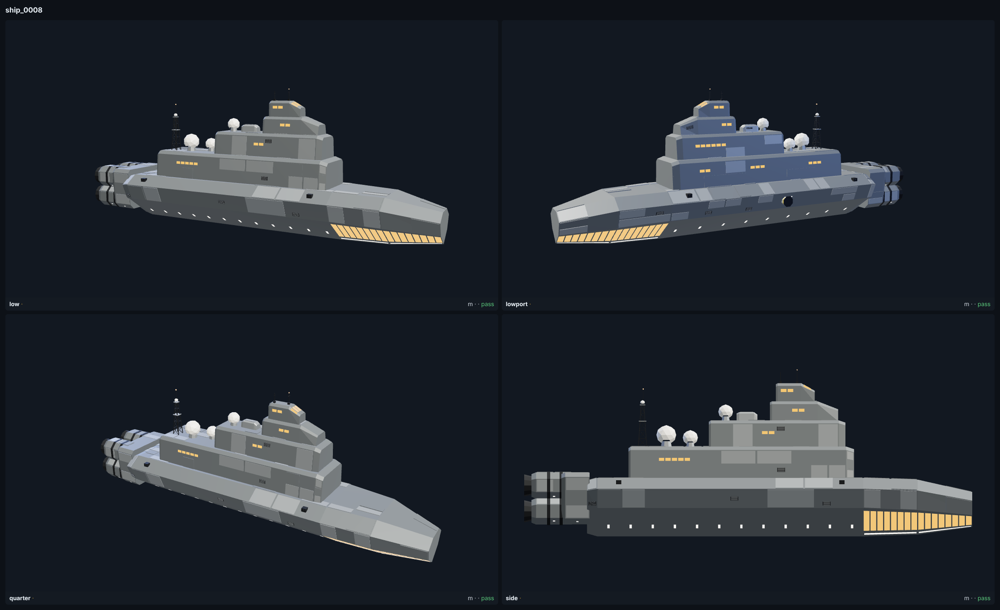
Wraparound prow glass. Nobody has to steer with a periscope.v0.3.0
Look under the ship
Most generators forget the belly. We gave ours keels, gondolas, slung cargo pods and underside equipment. Now ships look good from below too, which matters when you fly under them.
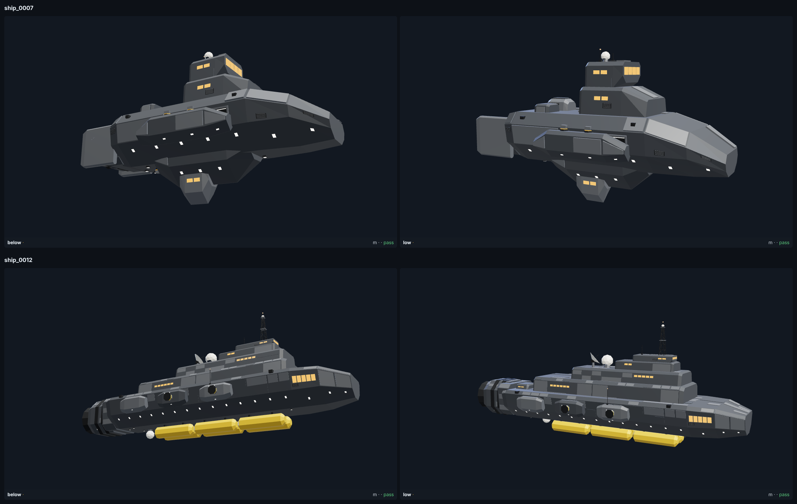
Belly view. Yes, we checked under there.Shipyard
The yard opens to visitors
We compiled the whole generator to WebAssembly, so it runs in a browser. Pick a faction, roll a seed, spin the ship around. Every ship gets a short code you can send to a friend, and the code always rebuilds the exact same ship.
v0.4–0.5
Companies, flags and paint
Ships now come from manufacturers (each yard has its own style) and fly for factions (each faction has its own paint). Then came the livery: ship names, registration numbers, emblems and chevrons. A ship with a name feels different. Nobody wants to lose the Halvorsen Dawn.
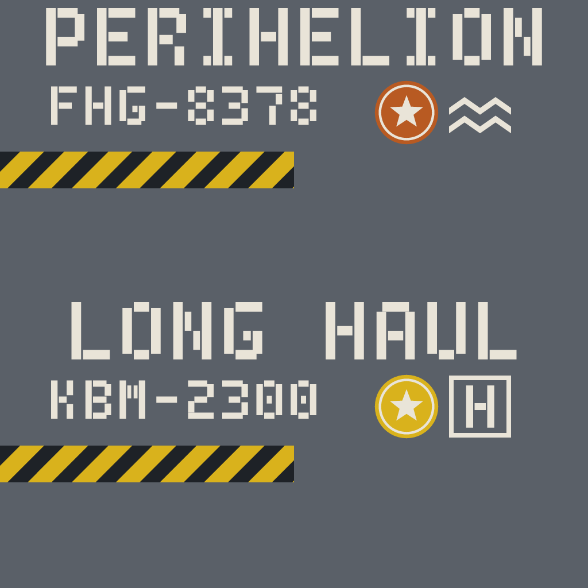
Livery sheets: same yard, different owners.v0.6.0
We broke them on purpose
Damaged and derelict ships: scorch marks, holes, missing plates, bent antennas. It is strangely fun to build a nice ship and then ruin it with one switch.
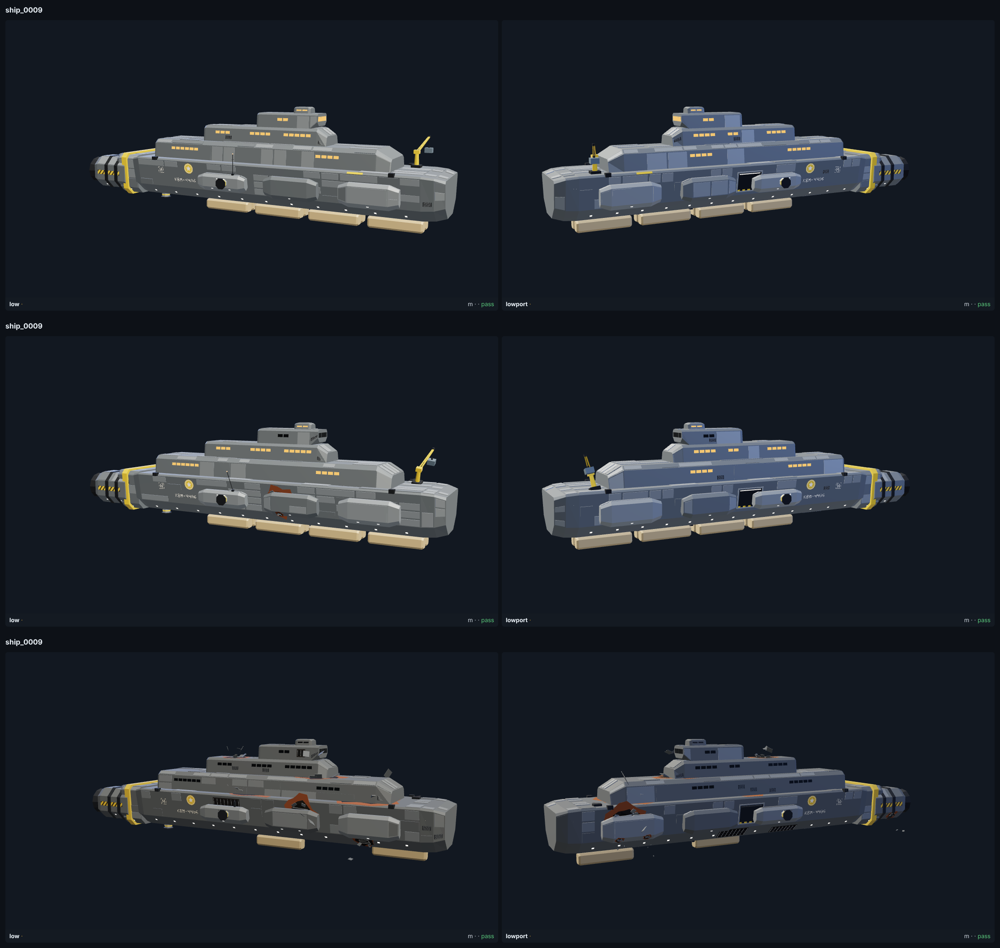
Intact, damaged, derelict. Same ship, three very different weeks.v0.7–0.9
The badlook fighters
BadSad wanted stealth fighters: faceted, aggressive, hard-surface, with a few bevels. Then he wanted more hull types, "not only pointy, some a bit blockier". Then wings, lots of wings. Now there are eight fighter forms, a bulk dial, three nose styles, and wings that sweep forward, fold up like a gull, stack in layers or go lopsided on purpose.
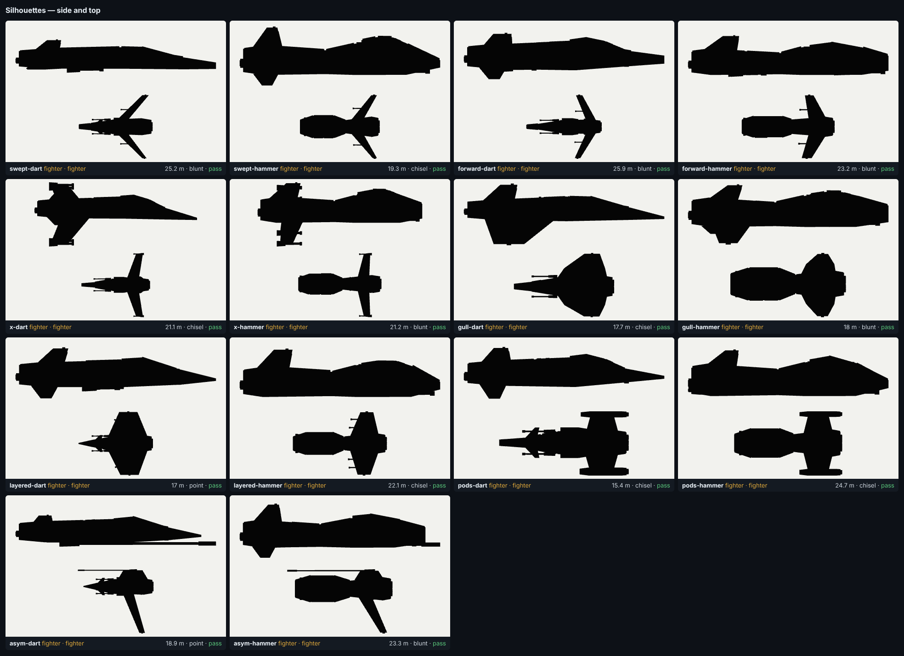
The wing catalogue. Pick one, or let the seed pick.
Noor: wing concept art
v0.10.0
Citadel, not cathedral
The request: a flying fortress. Big, heavy, covered in towers and guns, but original, and no cathedrals. The answer: ram prows, stacked keeps, bastions on the shoulders, broadside batteries and hangars in the flanks. Some of them are over 250 metres long.
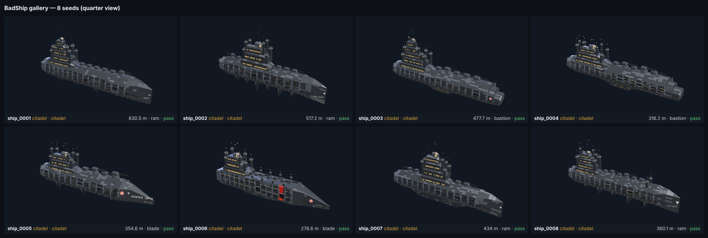
A fortress that flies. Zero stained-glass windows.
"Technically, it's like a flying citadel or fortress :P" (BadSad)
Day two
v0.11.0
Noor's sketchbook arrives
Noor sent concept sheets full of ship types and colour schemes. We turned them into a seven-step plan and twelve palettes: gunmetal, naval, off-white, stealth, pirate, luxury, medical and more. Banded schemes got their stripes.
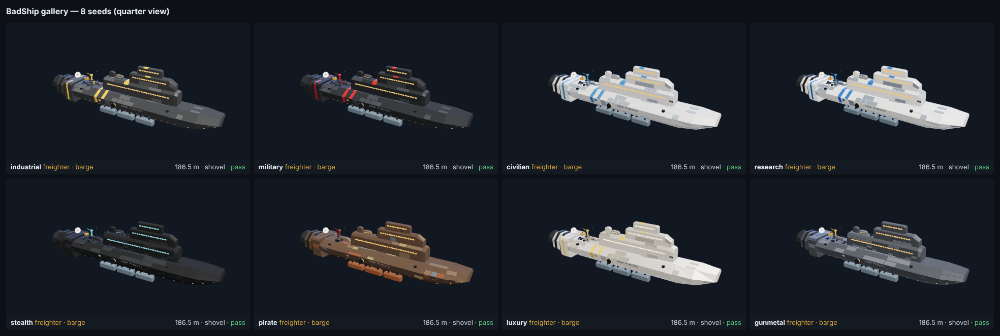
One hull, twelve outfits.
Noor: concept sheetsBadSad: "Start with your plan"
v0.12–0.13
The working ships
Not every ship is a hero. Some drill asteroids, run refineries, swing cranes or pull wrecks apart. Small craft run errands: runabouts, mules, shuttles and pioneers. These are the ships that keep everything else flying.
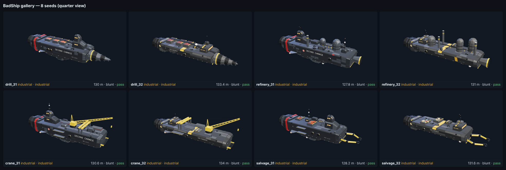
The night shift of space.
Bug of the dayThe mule, a cargo hauler, kept showing up carrying passenger pods. A mule with seats. We fixed it, but we liked it a little.
v0.14.0
Rings and a Gyre
Ring ships for science, expeditions and habitats, and a new fighter called the Gyre that flies inside its own ducted rings.
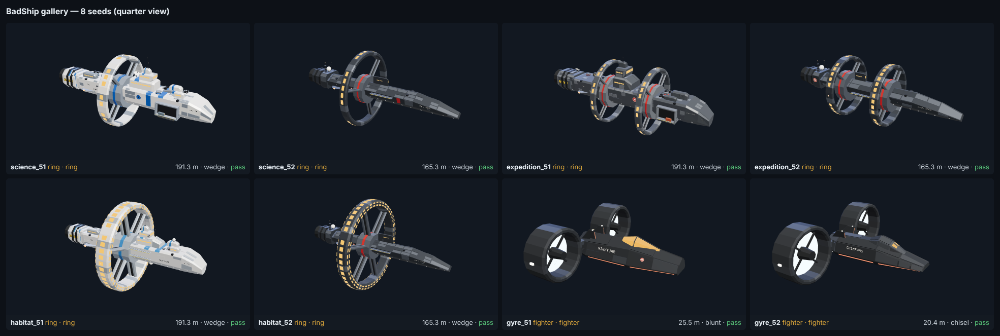
Lord of the rings, but legally distinct.v0.15.0
Liners, medics, explorers
Civilian ships at last: long passenger liners, medical ships with a pulse-line emblem, and explorers covered in sensors. Then BadSad went to lie down and said "continue without my decisions, I trust you". So the yard kept working.
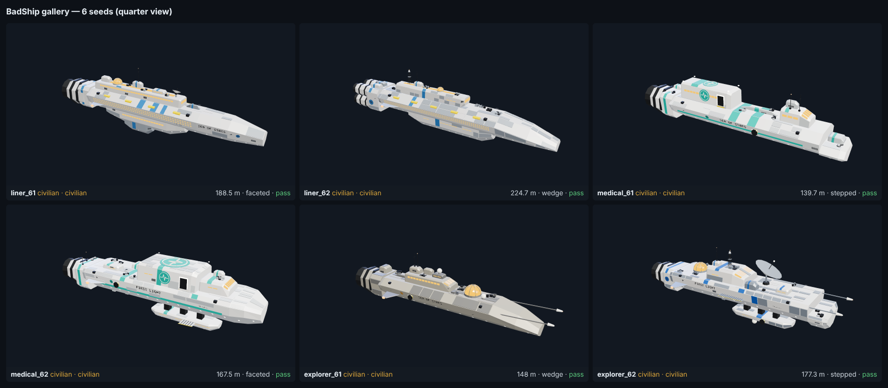
Window seats available.v0.16.0
Pirates of the Drift
Raiders: normal hulls that pirates rebuilt. Ram spikes on the nose, junk welded on at odd angles, mismatched patch plates and, yes, tattered sails on masts. In space. Do not ask how the sails work.
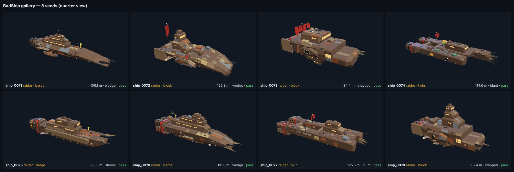
The Free Raiders of the Drift. Their paint job is mostly rust.v0.17.0
The warship ladder
Corvette, frigate, destroyer, cruiser, carrier. Each step bigger, each with more turrets and more attitude. The carrier has flight decks.
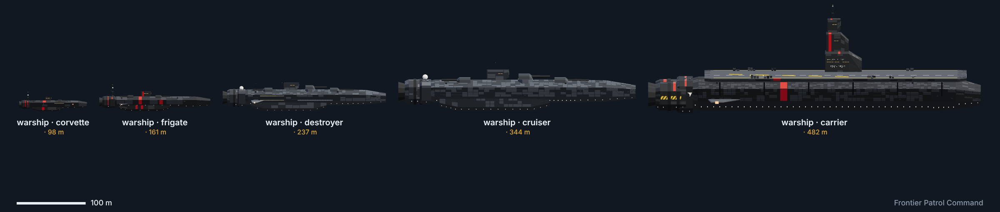
Climb the ladder. Mind the turrets.
Bug of the daySome warships came out with no turrets at all. The guns wanted more room than the top deck had. We gave them a shoulder deck. Peace through firepower restored.
v0.18.0
You can walk inside now
Interiors. Real decks you can walk on, rooms by ship type, stairwells between decks, an airlock, and sliding doors that work in Godot. We even wrote a robot that loads every ship in Godot and walks to every single room to prove you can get there.
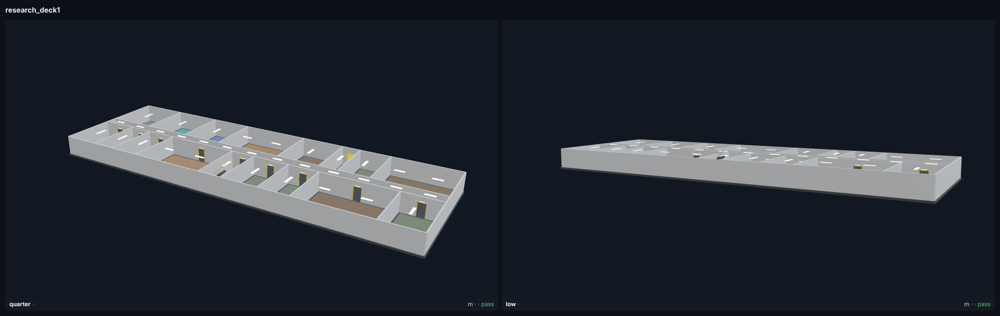
Crew quarters, mess, medbay, engineering. No furniture yet. Very minimalist.
Bug of the dayOn short ships the airlock was placed inside the bridge. Great for a quick exit, bad for the captain.
v0.19.0
Say hi to the neighbours
Real windows, cut right through the hull, with glass you can see through from both sides. Fly past a liner and you can see into the lit cabins. Stand in a cabin and you can look out at space. The yard makes sure nothing gets bolted over the glass.
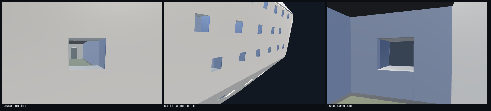
Outside looking in, inside looking out.v0.20.0
Atriums and ring corridors
BadSad sent a Blender sketch with a big hall, a ring corridor and rooms of many sizes, plus a hint: "multiple decks etc? 😛". So now big ships get halls two decks tall (an atrium on a liner, a hangar on a warship, a cargo bay on a freighter) with a gallery walkway around the void and a grand staircase up to it. Some decks get a ring corridor around a central room. Deep rooms become suites: medbay and ward, lab and clean room, the captain's office and cabin.
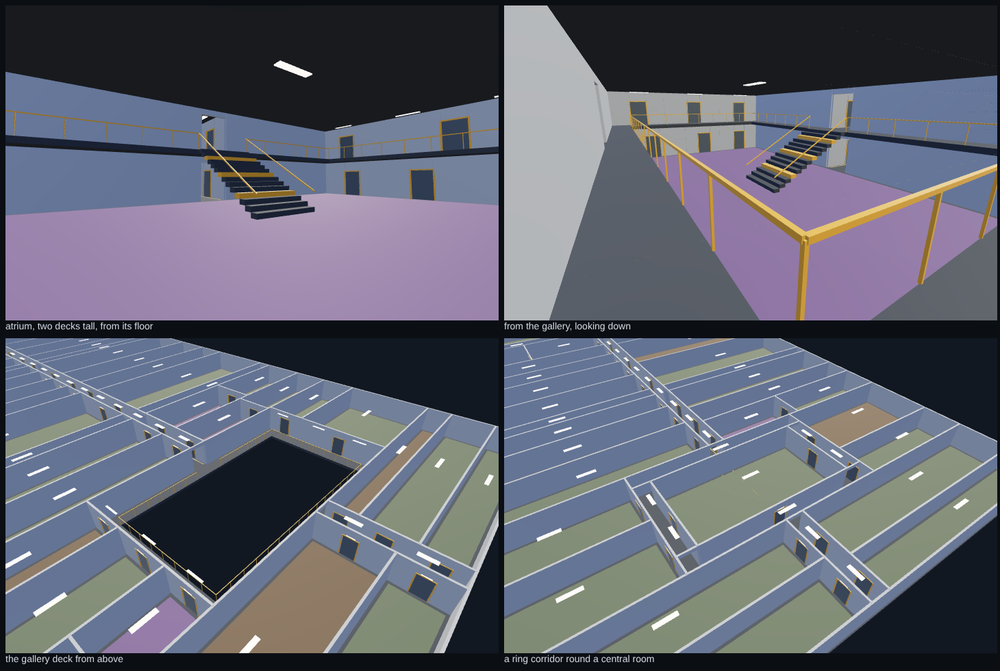
The atrium from its floor and from the gallery, the gallery deck, and a ring corridor.
Bug of the dayGodot's walking robot kept missing exactly one room per ship. The doors were 1.2 m wide, and after Godot kept a safe distance from both door frames, only half a metre was left. Sometimes that rounded down to nothing. Doors are 1.4 m now. Turns out spaceships need wide doors too.
v0.21.0
Up the ladder, down to the keel
BadSad looked at a little freighter and said: that ship has a top part and a part underneath, so why does it have only one deck? Fair point. Now the blocks on top of the hull get their own decks (comms, briefing, the captain's cabin), and the keel underneath gets one too (stores and workshops). Where it is roomy, stairs join them to the main deck. Where it is tight, a ladder goes up through a hatch. Big ships also get an elevator through all their main decks, with a door on every deck that only opens when the car is there, so nobody steps into an empty shaft.
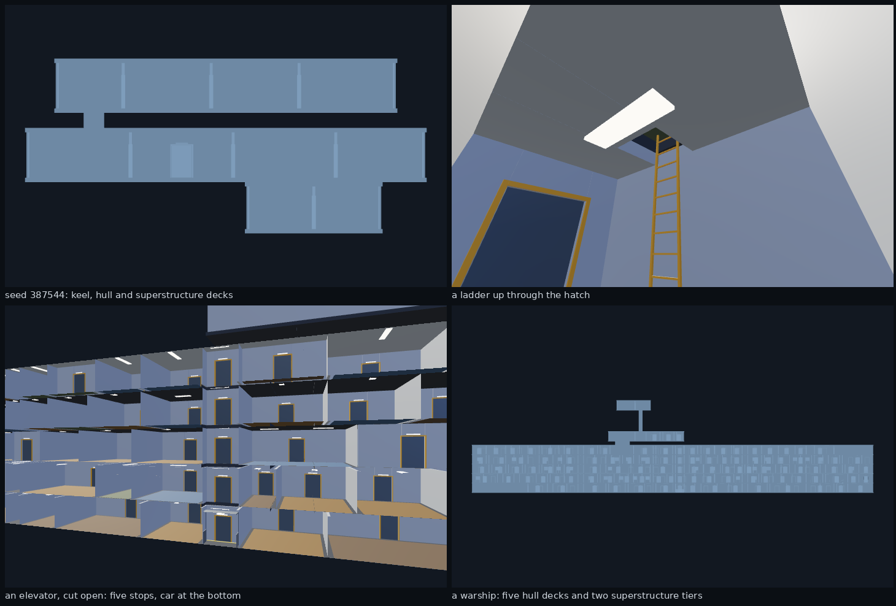
BadSad's freighter now has three decks. The elevator is shown cut open; in a game, the doors keep you out of the shaft.
Bug of the dayThe test robot said a tiny freighter had zero reachable rooms, not even the one it was standing in. The ship was fine. The robot was checking the map before the map was finished loading. On big ships, the elevator ride gave it just enough time, so nobody noticed until a ship had no elevator.
BadSad: "ladders, stairs, and elevators 😛"
v0.22.0
The gondola gets a ladder
Some ships carry a pod under the hull, hanging on struts with open space between. Now that pod gets a deck too: an observation lounge on a liner, a lab on a research ship, cargo on a freighter. A ladder goes up to the main deck through a ribbed access tube that the yard welds on outside, right where the ladder needs it. Mind the gap. Actually, you can't, it's enclosed now.
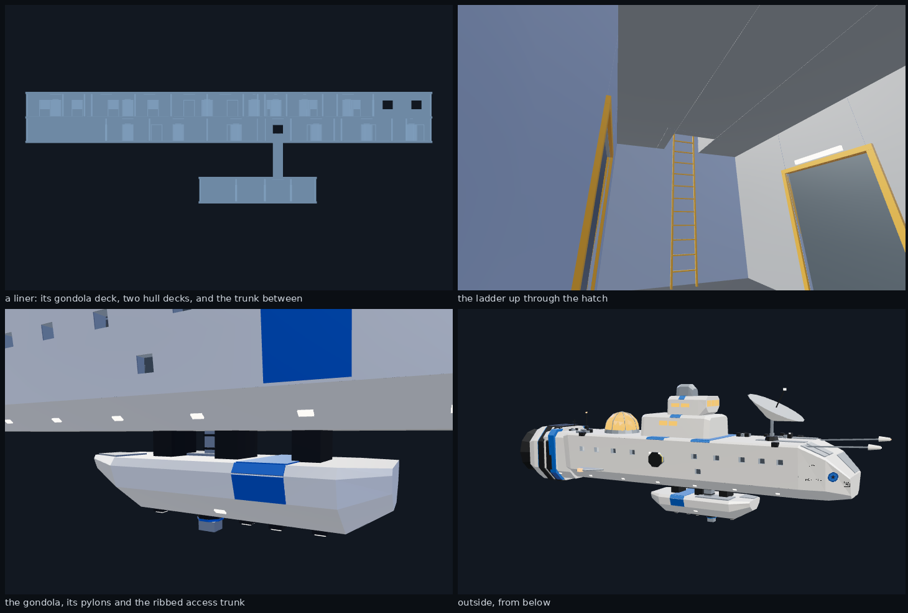
An observation lounge with a view of the stars below. The commute is one ladder.
Bug of the dayThe first gondola ladders stood right in the middle of the room, like a pole in a dance hall. On narrow ships that blocked the whole room, and Godot's robot could not get past. Now ladders stand against the wall, like sensible ladders do.
v0.23–0.24
Rooms that fit the hull
BadSad spotted a freighter with a bridge block that had windows but nothing inside. The block sat a little off-centre and was a bit short, so the generator skipped it. Now it gets a deck, with a real bridge at the front. Then BadSad asked the big question: the block is not a box, so why are the rooms boxes? Fair. Now a block's deck follows the block's own shape. Floors stay flat so people can walk, but the walls lean in along the slanted edges, and the ceiling comes down where the nose slopes.
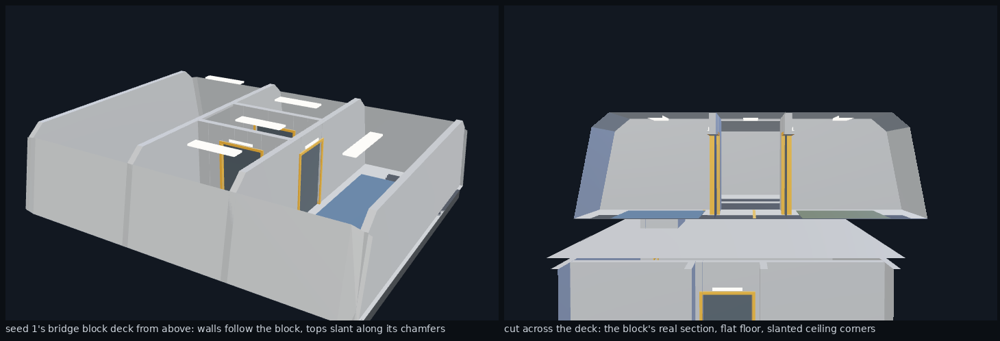
Left: walls that lean with the hull. Right: the block cut open, no more shoeboxes.
Bug of the daySwitching on Markers in the Shipyard broke every single ship. The 3D library quietly removes dots from names, so the page stopped recognising its own markers and tried to paint them with a material that did not exist. One line fixed it. Finding that one line took a while.
v0.25.0
Windows you can actually look through
The bridge block's windows were a fib: glass-coloured plates on solid metal. Now the yard remembers every pane it paints, and when there is a room behind one, it cuts a real hole, puts in see-through glass, and lines the hole up with the room's wall. The sloped windscreen got the best treatment. The bridge now opens forward into a little nook under the slope, so you stand at the helm and look up and out through the glass.
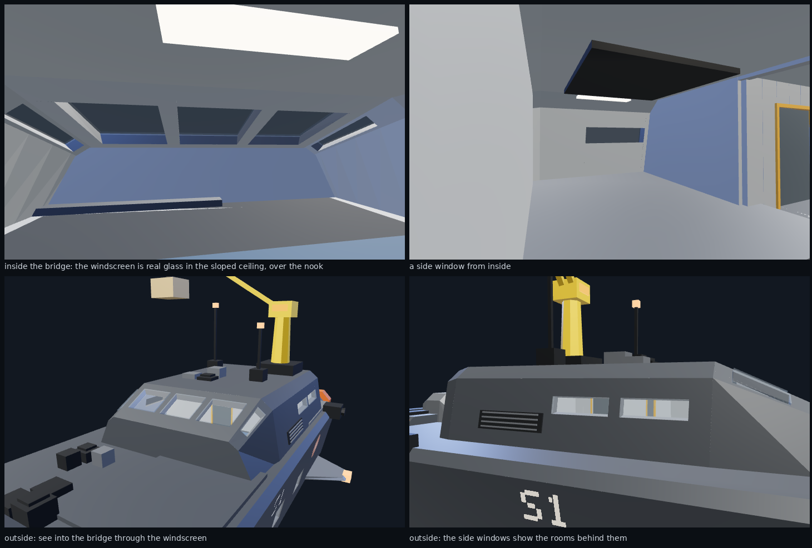
Seed 1, the freighter that started it all. The view from the helm is finally real.
Bug of the dayBadSad noticed that one front corner of the bridge block was dented inward while its twin on the other side was nicely bulged. A slanted face that is not quite flat gets split into two triangles, and the yard always cut along the same diagonal, which bulges on one side and dents on the mirrored side. Now it picks whichever diagonal bulges outward. Every ship got a little smoother.
BadSad: spotted the fake windowsBadSad: spotted the dent
v0.26.0
Every block, every pod
BadSad said: let's make it all consistent. Fair. So the shaped rooms and real windows now reach every block in a stack, not just the top one, with hatches cut through the shaped ceilings for the ladders. The gondola got the same treatment: its lounge follows the shape of the pod, and a research ship's observation glass moved up to eye level, so the scientists can finally see what they are observing.
Bug of the dayTwo of them, both invisible floors. The shaped rooms laid a thin floor out to the walls and forgot to leave holes for the stairs. And on blocks sitting right on the hull, the block's own bottom face landed exactly at floor height and quietly covered the stairwell. Godot's robot walked up the stairs and bonked its head on a floor nobody could see.
BadSad: "make it all consistent"
v0.27.0
The hull joins in
The big one. The main hull's decks now follow the hull's shape too: stacked decks with slanted corners, rooms reaching into the nose and tail, and each floor's underside becoming the ceiling of the deck below. Every window on every part of the ship now goes through one system. That means the painted glass on the hull became real: a liner's long rows of cabin windows, the faceted prow glass, even the windscreens on the little runabouts. Decks under the bridge with glass in the nose ahead got a new observation room to enjoy the view.
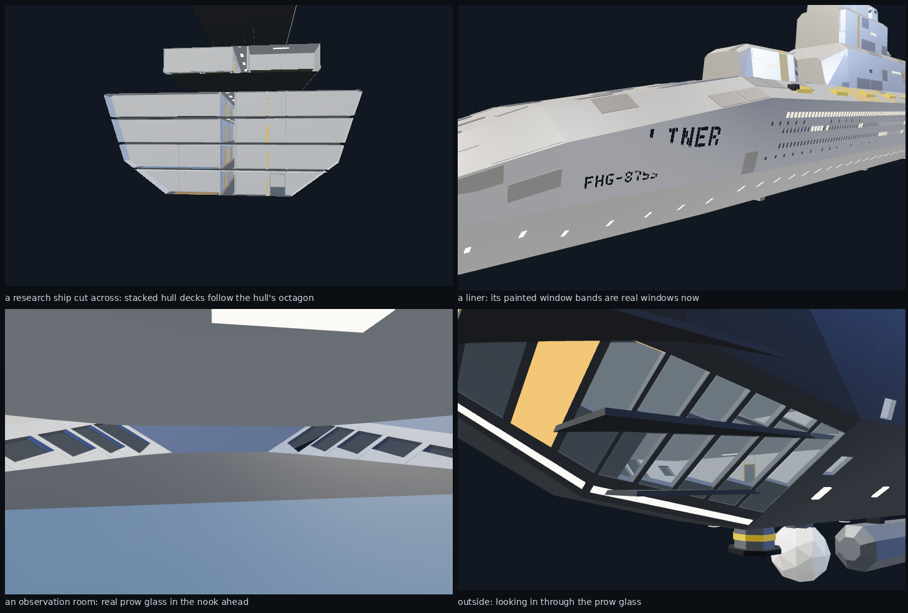
A liner went from 0 to more than 500 windows you can actually look through.v0.28.0
Nothing left in a box
The last two holdouts. The keel deck now sits fully inside the keel and follows its tapered shape. And the window band across a flat-fronted bridge, which was a row of glass bricks stuck on the front, is now real: the front of the block gets proper openings, and the bridge's front wall gets matching ones. With that, every part of every ship follows its own shape inside, and every pane of glass a room can see through is a real window. Consistency achieved. BadSad asked for it, and it only took four releases.
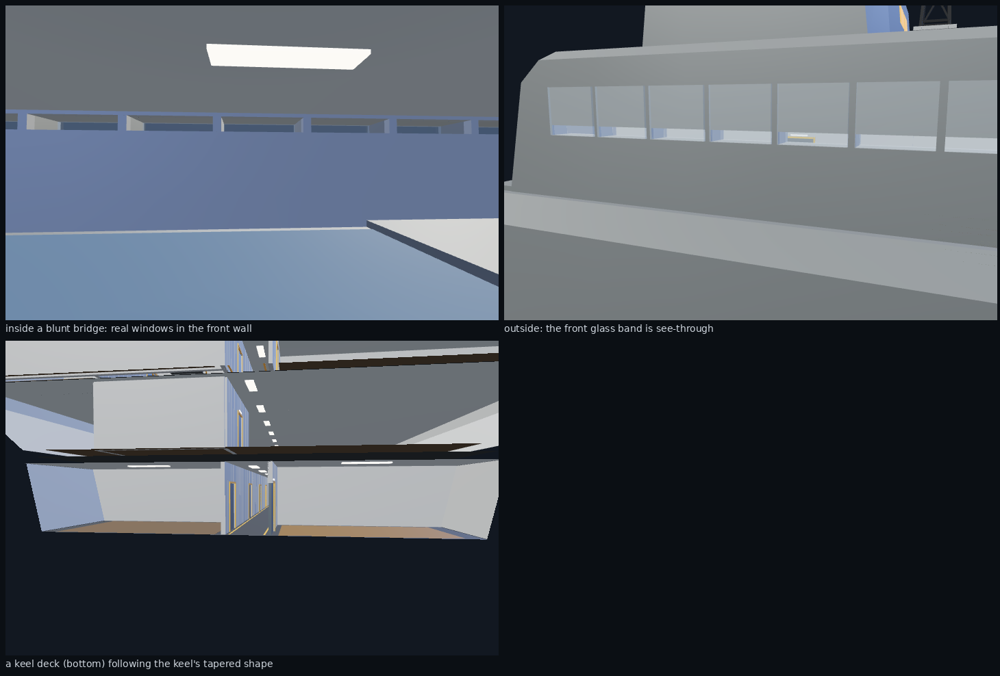
The front glass, from both sides, and a keel deck with nothing boxy about it.v0.29.0
Name tags for everything
BadSad asked a very game-developer question: can a game actually find the turrets? And then swap them for proper art? Turns out every part already had a name, but now it also carries a little luggage tag: how big it is, where it bolts on, which way it points. Every window got its own name too (a liner has about five hundred). There is a reference page listing every kind of part the yard builds, written by the yard itself so it never goes stale, and a Godot script that swaps turrets for your turrets and hull paint for your hull paint in one line. The ships are ready for real assets. Noor, start drawing.
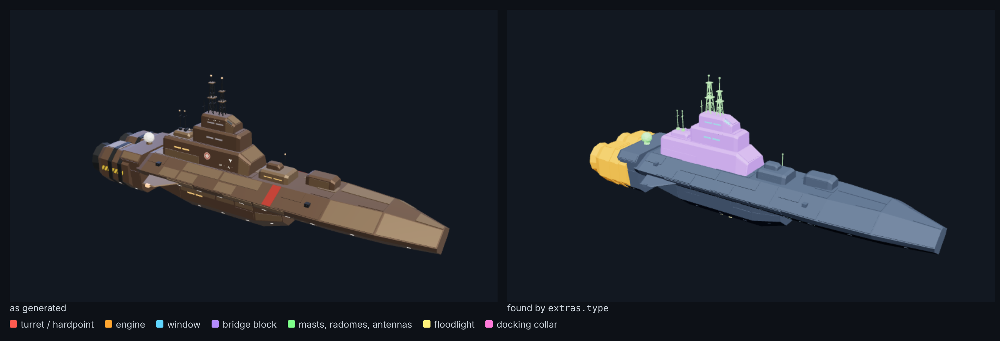
Same ship, seen the way a game sees it: every part knows what it is.v0.30.0
Somebody lives here
Twenty-nine launches of beautifully empty rooms. Crew quarters with no beds, a mess with nowhere to sit, a bridge where the captain had to stand and point. Not any more: bunks with actual pillows, lockers, mess tables with benches, galley counters, med beds, workbenches, humming machines in engineering, gun racks in the armoury, crates and shelves in the holds, sofas by the windows. The bridge gets a row of consoles facing the front glass. The hard part wasn't making furniture, it was teaching it manners: nothing in front of a door, nothing on the stairs, nothing between the door and the middle of the room. Our robot walker in Godot now has to walk around every bunk and table, and it still reaches every room on every ship. Every piece has a name tag too, so Noor can draw a better bunk and it lands in every crew room in the fleet.
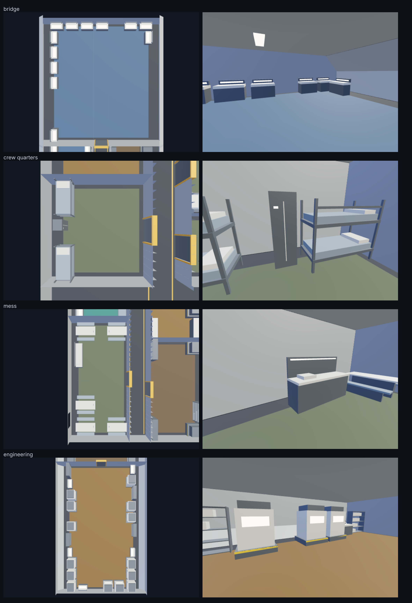
From above and from the middle of the room. The pillows are regulation issue.v0.31.0
The captain can finally see
We went to add a little raised platform for the helm, and found a bigger problem. Our big bridge blocks are tall. Like, five decks tall. And the bridge was sitting on the bottom deck, staring at a wall, while its beautiful window band hung ten metres overhead, lighting up nobody. On plenty of ships the bridge block had no deck in it at all. We counted: out of 138 bridge blocks, the crew could see out of the front glass of exactly two. Two! So now the bridge deck goes where the glass is, at the right height to look out over the consoles, and the space underneath fills with decks and stairs to climb up to it. Small bridges are all bridge, with a hatch at the back. Score after the fix: 60. The rest sit out over the nose or tail where there's no deck to climb from yet. That one's on the list.
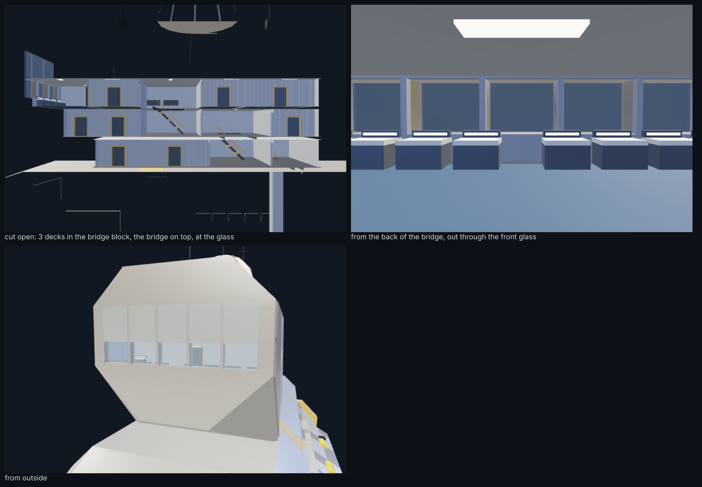
Three decks up, a row of consoles, and a view. Mind the stairs.v0.32.0
The empty building
This one was supposed to be about walkways: little covered bridges along the hull, so people could reach the bridges perched out over the bow. We built one. Then we looked at why those bridges were unreachable in the first place, and found something embarrassing. Our long-haul freighters have a command section up front, a block the size of an office building, and it had been completely empty since the day it was born. No floors. No stairs. Just a very expensive box with a bridge balanced on top. Now it gets real decks, seven of them on the big freighters, lined up with the spine's decks so you walk straight in through a doorway, then take the stairs to the top. The walkways turned out not to be needed by a single ship, so they went back in the drawer. Bridges with a view: 83 out of 138, up from 2 two releases ago.
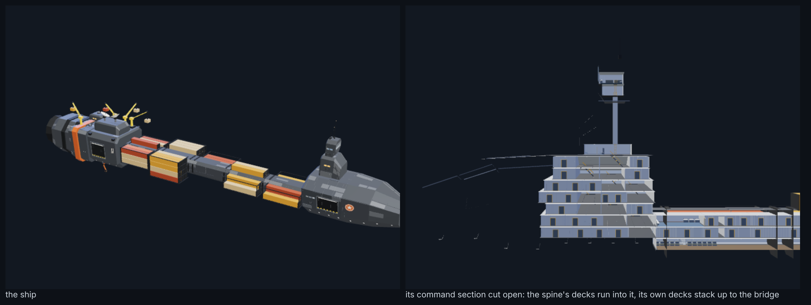
Seven floors of brand new office space. The view from the top is included in the rent.
Next on the slipway
More detail on the outside: panel lines, vents and greebles. Maybe ships for our game project (title to be decided, the old one was taken). Maybe whatever Noor draws next. The yard is open.
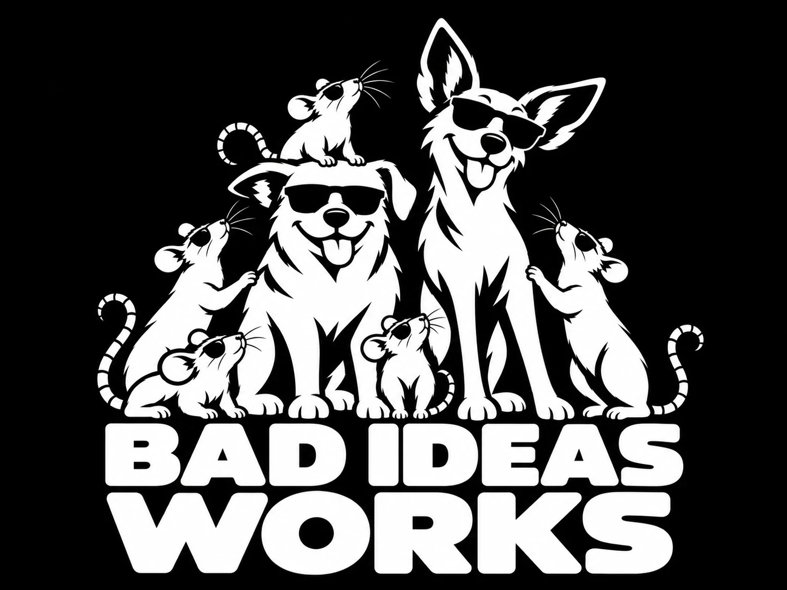
Bad Ideas Works
The studio behind BadShip, named after how most of our best features start. The crew on the logo are BadSad's animals, all in sunglasses. The dogs are Melon, the smaller one, still on duty in the yard, and Kiwi, who waits on the other side of the Rainbow Bridge. The five rats are named after figures of speech: Alegoria, Dygresja, Metafora, Hiperbola and Elipsa, or Ali, Digi, Metka, Hipka and Elipka for short.